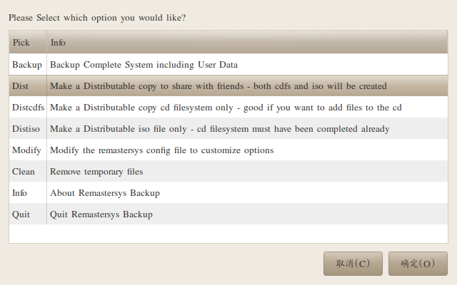
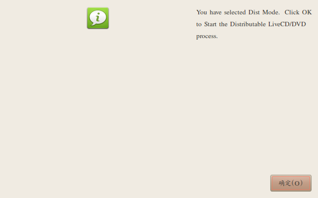
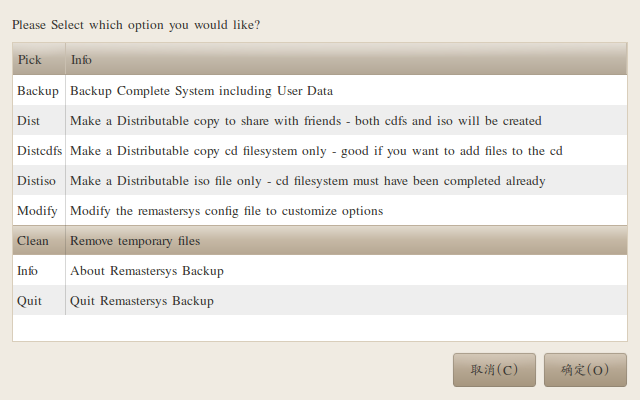

不知道你有没有这样的苦恼，每次重装linux系统的时候，又要把以前的
软件重装一遍。又是换源，又是更新。各种蛋疼。说到这里，你大概猜到这篇
博客专门用来治疗这种蛋疼到。好了,不说废话了，直接看下面方法。
安装Remastersys(以Ubuntu为例)
sudo echo "deb http://www.geekconnection.org/remastersys/repository karmic/" > /etc/apt/sources.list sudo apt-get update && sudo apt-get upgrade
定制ISO
定制前最好把系统多余到软件包什么的都删了，需要到软件保留。
直接看截图吧：



最后生成到iso文件在/home/remastersys/remastersys 里面
拷贝出来后，可清理。

Comments !